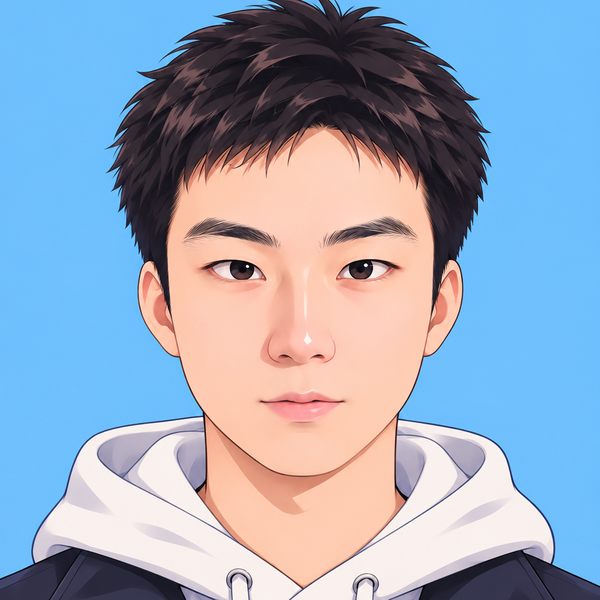

Xiangqi Li
Multimodal perception in open environments
and continual learning
I am a master's student in Computer Science and Technology at the Institute of Computing Technology, Chinese Academy of Sciences, advised by Zhulin An and Libo Huang.
My research focuses on multimodal perception and understanding in open environments, and continual learning for models. I work on 3D point cloud recognition, multimodal scene understanding, and knowledge retention as models encounter new categories.


- Beijing, China
 GitHub
GitHub- Google Scholar
- dblp
- ORCID
01 / FOCUS
Research
I study multimodal perception and understanding in open environments and model continual learning. My recent work connects 3D scene understanding with learning new categories from limited supervision.
02 / UPDATES
News
- 2026SceneScaffold was accepted to NeurIPS 2026 as a Spotlight paper.
- 2026Point-UQ was published at ICLR 2026.
- 2026Honored with the National Scholarship.
- 20253D-FLEG was published at ICML 2025.
03 / SELECTED WORK
Publications
- SceneScaffold: Active Scene-State Construction for Unified 3D Scene Understanding
NeurIPS 2026 (Spotlight)
04 / BACKGROUND
Education
- Institute of Computing Technology, Chinese Academy of Sciences
Master's Student · Computer Science and Technology - Hefei University of Technology
Bachelor's Degree
05 / RECOGNITION
Honors and Awards
- 2026National Scholarship
- 2026UCAS Outstanding Student
- 2025ICT Enterprise Scholarship
- 2025UCAS First-Class Academic Scholarship